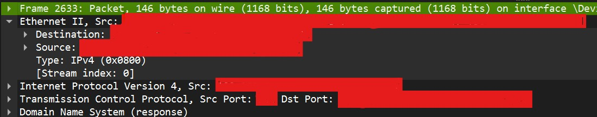

Wireshark tehtävä
Tässä kuvakaappauksessa näkyy kaapattua liikennettä koneeltani.
Ensimmäisenä Ethrenet II linkkikerros ja palvelimen MAC-osoite,
seuraavaksi on verkkokerros eli Destination-rivi,
viimeisenä pakettikerroksena on Transmission Control Protocol (TCP).
